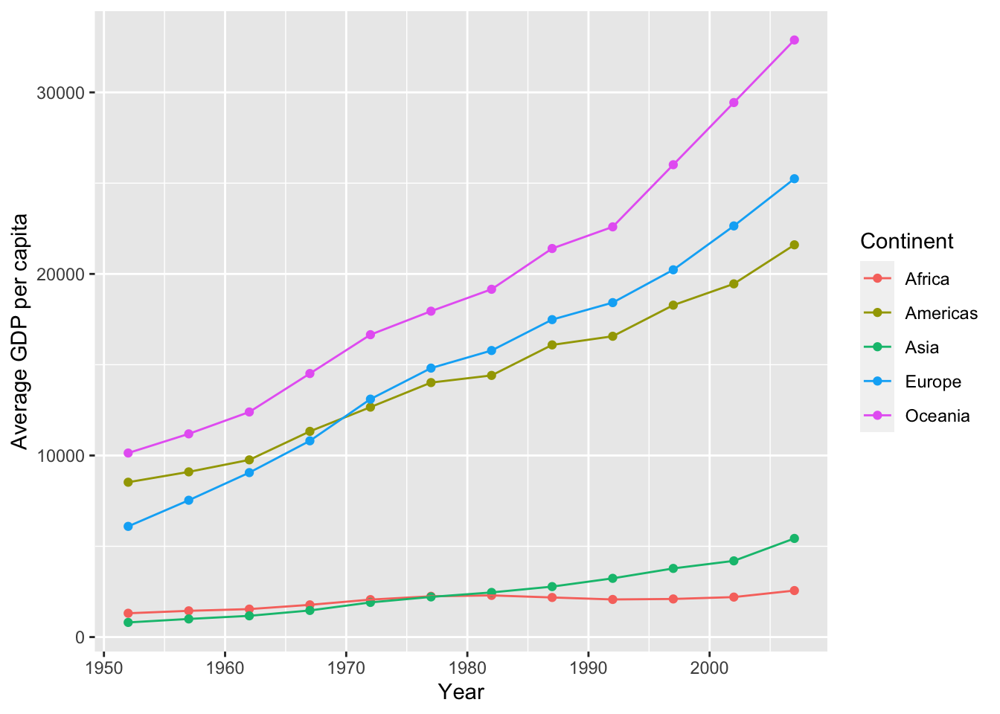
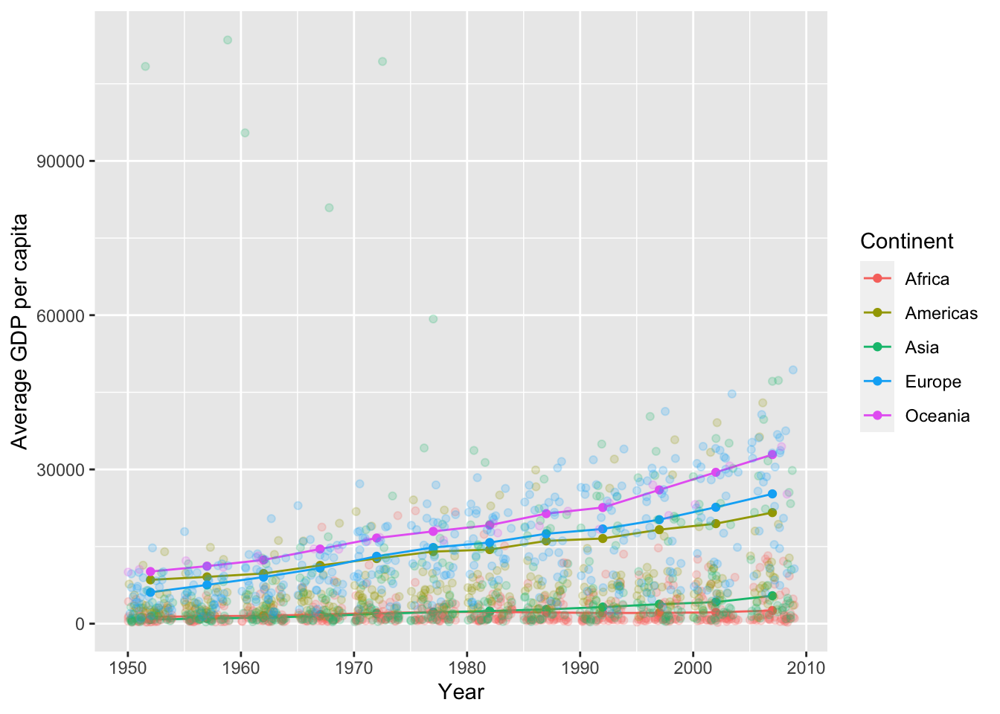
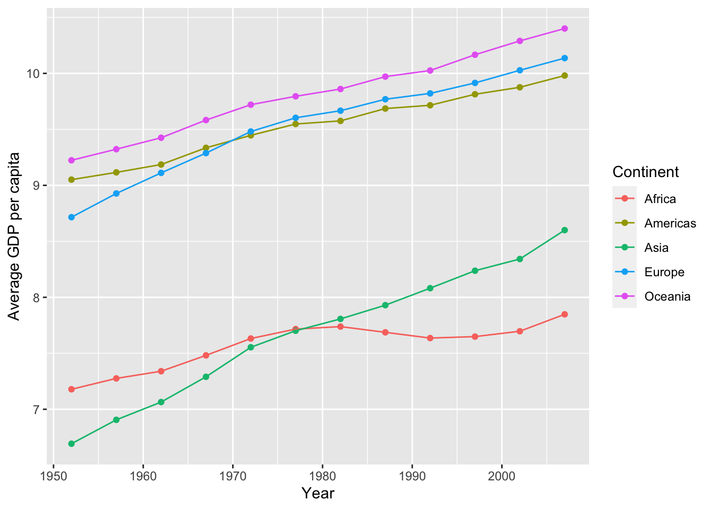

Code
library(tidyverse)
library(gapminder)
library(lmtest)
library(olsrr)
library(car)
data(gapminder)library(tidyverse)
library(gapminder)
library(lmtest)
library(olsrr)
library(car)
data(gapminder)#average gdp by continent
gapminder2 <- gapminder %>%
group_by(year, continent) %>%
summarize(avg_gdp = sum(gdpPercap * pop) / sum(pop))
gapminder4 <- gapminder %>%
group_by(continent) %>%
summarize(avg_gdp = sum(gdpPercap * pop) / sum(pop))
#average gpd by country
gapminder3 <- gapminder %>%
group_by(year, continent, country) %>%
summarize(avg_gdp = sum(gdpPercap * pop) / sum(pop))
#average continent gdp over time
ggplot(gapminder2, aes(x = year, y = avg_gdp, color = continent)) +
geom_point() +
geom_line() +
labs(x = "Year", y = "Average GDP per capita", color = "Continent")
#HELP: add the country level data to this plot but with a low alpha to fade them into the background
ggplot(gapminder2, aes(x = year, y = avg_gdp, color = continent)) +
geom_point() +
geom_line() +
labs(x = "Year", y = "Average GDP per capita", color = "Continent") +
geom_jitter(data = gapminder3, alpha = 0.2)
#log transform the avg_gdp variable
gapminder2 <- gapminder2 %>%
mutate(log_avg_gdp = log(avg_gdp))
#plot the log transformed data
ggplot(gapminder2, aes(x = year, y = log_avg_gdp, color = continent)) +
geom_point() +
geom_line() +
labs(x = "Year", y = "Average GDP per capita", color = "Continent")
#lm of the regular gdp
lm(gdpPercap ~ year + continent, data = gapminder) %>%
summary()
Call:
lm(formula = gdpPercap ~ year + continent, data = gapminder)
Residuals:
Min 1Q Median 3Q Max
-13594 -4113 -1183 1788 108541
Coefficients:
Estimate Std. Error t value Pr(>|t|)
(Intercept) -254715.28 23254.69 -10.953 <2e-16 ***
year 129.78 11.75 11.049 <2e-16 ***
continentAmericas 4942.36 588.00 8.405 <2e-16 ***
continentAsia 5708.40 537.72 10.616 <2e-16 ***
continentEurope 12275.72 553.92 22.162 <2e-16 ***
continentOceania 16427.85 1740.93 9.436 <2e-16 ***
---
Signif. codes: 0 '***' 0.001 '**' 0.01 '*' 0.05 '.' 0.1 ' ' 1
Residual standard error: 8369 on 1698 degrees of freedom
Multiple R-squared: 0.2813, Adjusted R-squared: 0.2791
F-statistic: 132.9 on 5 and 1698 DF, p-value: < 2.2e-16#muatate in a log transformed gdpPercap into the gapminder dataframe
gapminder <- gapminder %>%
mutate(log_gdpPercap = log(gdpPercap))
#lm of the log transformed gdp
lm(log_gdpPercap ~ year + continent, data = gapminder) %>%
summary()
Call:
lm(formula = log_gdpPercap ~ year + continent, data = gapminder)
Residuals:
Min 1Q Median 3Q Max
-2.4320 -0.6184 -0.0410 0.5194 3.9830
Coefficients:
Estimate Std. Error t value Pr(>|t|)
(Intercept) -25.954616 2.457994 -10.56 <2e-16 ***
year 0.016773 0.001242 13.51 <2e-16 ***
continentAmericas 1.366984 0.062151 22.00 <2e-16 ***
continentAsia 0.823402 0.056836 14.49 <2e-16 ***
continentEurope 2.096122 0.058549 35.80 <2e-16 ***
continentOceania 2.529972 0.184014 13.75 <2e-16 ***
---
Signif. codes: 0 '***' 0.001 '**' 0.01 '*' 0.05 '.' 0.1 ' ' 1
Residual standard error: 0.8846 on 1698 degrees of freedom
Multiple R-squared: 0.4935, Adjusted R-squared: 0.492
F-statistic: 330.9 on 5 and 1698 DF, p-value: < 2.2e-16